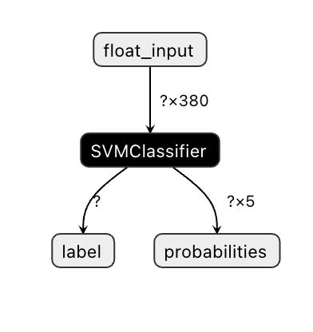
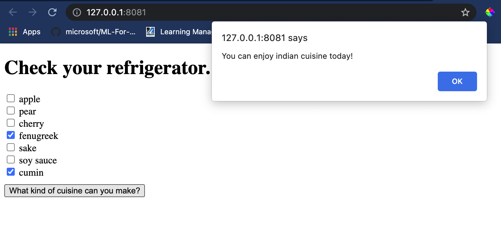

Build a Cuisine Recommender Web App⚓︎
In this lesson, you will build a classification model using some of the techniques you have learned in previous lessons and with the delicious cuisine dataset used throughout this series. In addition, you will build a small web app to use a saved model, leveraging Onnx's web runtime.
One of the most useful practical uses of machine learning is building recommendation systems, and you can take the first step in that direction today!

🎥 Click the image above for a video: Jen Looper builds a web app using classified cuisine data
Pre-lecture quiz⚓︎
In this lesson you will learn:
- How to build a model and save it as an Onnx model
- How to use Netron to inspect the model
- How to use your model in a web app for inference
Build your model⚓︎
Building applied ML systems is an important part of leveraging these technologies for your business systems. You can use models within your web applications (and thus use them in an offline context if needed) by using Onnx.
In a previous lesson, you built a Regression model about UFO sightings, "pickled" it, and used it in a Flask app. While this architecture is very useful to know, it is a full-stack Python app, and your requirements may include the use of a JavaScript application.
In this lesson, you can build a basic JavaScript-based system for inference. First, however, you need to train a model and convert it for use with Onnx.
Exercise - train classification model⚓︎
First, train a classification model using the cleaned cuisines dataset we used.
-
Start by importing useful libraries:
!pip install skl2onnx import pandas as pdYou need 'skl2onnx' to help convert your Scikit-learn model to Onnx format.
-
Then, work with your data in the same way you did in previous lessons, by reading a CSV file using
read_csv():data = pd.read_csv('../data/cleaned_cuisines.csv') data.head() -
Remove the first two unnecessary columns and save the remaining data as 'X':
X = data.iloc[:,2:] X.head() -
Save the labels as 'y':
y = data[['cuisine']] y.head()
Commence the training routine⚓︎
We will use the 'SVC' library which has good accuracy.
-
Import the appropriate libraries from Scikit-learn:
from sklearn.model_selection import train_test_split from sklearn.svm import SVC from sklearn.model_selection import cross_val_score from sklearn.metrics import accuracy_score,precision_score,confusion_matrix,classification_report -
Separate training and test sets:
X_train, X_test, y_train, y_test = train_test_split(X,y,test_size=0.3) -
Build an SVC Classification model as you did in the previous lesson:
model = SVC(kernel='linear', C=10, probability=True,random_state=0) model.fit(X_train,y_train.values.ravel()) -
Now, test your model, calling
predict():y_pred = model.predict(X_test) -
Print out a classification report to check the model's quality:
print(classification_report(y_test,y_pred))As we saw before, the accuracy is good:
precision recall f1-score support chinese 0.72 0.69 0.70 257 indian 0.91 0.87 0.89 243 japanese 0.79 0.77 0.78 239 korean 0.83 0.79 0.81 236 thai 0.72 0.84 0.78 224 accuracy 0.79 1199 macro avg 0.79 0.79 0.79 1199 weighted avg 0.79 0.79 0.79 1199
Convert your model to Onnx⚓︎
Make sure to do the conversion with the proper Tensor number. This dataset has 380 ingredients listed, so you need to notate that number in FloatTensorType:
-
Convert using a tensor number of 380.
from skl2onnx import convert_sklearn from skl2onnx.common.data_types import FloatTensorType initial_type = [('float_input', FloatTensorType([None, 380]))] options = {id(model): {'nocl': True, 'zipmap': False}} -
Create the onx and store as a file model.onnx:
onx = convert_sklearn(model, initial_types=initial_type, options=options) with open("./model.onnx", "wb") as f: f.write(onx.SerializeToString())Note, you can pass in options in your conversion script. In this case, we passed in 'nocl' to be True and 'zipmap' to be False. Since this is a classification model, you have the option to remove ZipMap which produces a list of dictionaries (not necessary).
noclrefers to class information being included in the model. Reduce your model's size by settingnoclto 'True'.
Running the entire notebook will now build an Onnx model and save it to this folder.
View your model⚓︎
Onnx models are not very visible in Visual Studio code, but there's a very good free software that many researchers use to visualize the model to ensure that it is properly built. Download Netron and open your model.onnx file. You can see your simple model visualized, with its 380 inputs and classifier listed:

Netron is a helpful tool to view your models.
Now you are ready to use this neat model in a web app. Let's build an app that will come in handy when you look in your refrigerator and try to figure out which combination of your leftover ingredients you can use to cook a given cuisine, as determined by your model.
Build a recommender web application⚓︎
You can use your model directly in a web app. This architecture also allows you to run it locally and even offline if needed. Start by creating an index.html file in the same folder where you stored your model.onnx file.
-
In this file index.html, add the following markup:
<!DOCTYPE html> <html> <header> <title>Cuisine Matcher</title> </header> <body> ... </body> </html> -
Now, working within the
bodytags, add a little markup to show a list of checkboxes reflecting some ingredients:<h1>Check your refrigerator. What can you create?</h1> <div id="wrapper"> <div class="boxCont"> <input type="checkbox" value="4" class="checkbox"> <label>apple</label> </div> <div class="boxCont"> <input type="checkbox" value="247" class="checkbox"> <label>pear</label> </div> <div class="boxCont"> <input type="checkbox" value="77" class="checkbox"> <label>cherry</label> </div> <div class="boxCont"> <input type="checkbox" value="126" class="checkbox"> <label>fenugreek</label> </div> <div class="boxCont"> <input type="checkbox" value="302" class="checkbox"> <label>sake</label> </div> <div class="boxCont"> <input type="checkbox" value="327" class="checkbox"> <label>soy sauce</label> </div> <div class="boxCont"> <input type="checkbox" value="112" class="checkbox"> <label>cumin</label> </div> </div> <div style="padding-top:10px"> <button onClick="startInference()">What kind of cuisine can you make?</button> </div>Notice that each checkbox is given a value. This reflects the index where the ingredient is found according to the dataset. Apple, for example, in this alphabetic list, occupies the fifth column, so its value is '4' since we start counting at 0. You can consult the ingredients spreadsheet to discover a given ingredient's index.
Continuing your work in the index.html file, add a script block where the model is called after the final closing
</div>. -
First, import the Onnx Runtime:
<script src="https://cdn.jsdelivr.net/npm/onnxruntime-web@1.9.0/dist/ort.min.js"></script>Onnx Runtime is used to enable running your Onnx models across a wide range of hardware platforms, including optimizations and an API to use.
-
Once the Runtime is in place, you can call it:
<script> const ingredients = Array(380).fill(0); const checks = [...document.querySelectorAll('.checkbox')]; checks.forEach(check => { check.addEventListener('change', function() { // toggle the state of the ingredient // based on the checkbox's value (1 or 0) ingredients[check.value] = check.checked ? 1 : 0; }); }); function testCheckboxes() { // validate if at least one checkbox is checked return checks.some(check => check.checked); } async function startInference() { let atLeastOneChecked = testCheckboxes() if (!atLeastOneChecked) { alert('Please select at least one ingredient.'); return; } try { // create a new session and load the model. const session = await ort.InferenceSession.create('./model.onnx'); const input = new ort.Tensor(new Float32Array(ingredients), [1, 380]); const feeds = { float_input: input }; // feed inputs and run const results = await session.run(feeds); // read from results alert('You can enjoy ' + results.label.data[0] + ' cuisine today!') } catch (e) { console.log(`failed to inference ONNX model`); console.error(e); } } </script>
In this code, there are several things happening:
- You created an array of 380 possible values (1 or 0) to be set and sent to the model for inference, depending on whether an ingredient checkbox is checked.
- You created an array of checkboxes and a way to determine whether they were checked in an
initfunction that is called when the application starts. When a checkbox is checked, theingredientsarray is altered to reflect the chosen ingredient. - You created a
testCheckboxesfunction that checks whether any checkbox was checked. - You use
startInferencefunction when the button is pressed and, if any checkbox is checked, you start inference. - The inference routine includes:
- Setting up an asynchronous load of the model
- Creating a Tensor structure to send to the model
- Creating 'feeds' that reflects the
float_inputinput that you created when training your model (you can use Netron to verify that name) - Sending these 'feeds' to the model and waiting for a response
Test your application⚓︎
Open a terminal session in Visual Studio Code in the folder where your index.html file resides. Ensure that you have http-server installed globally, and type http-server at the prompt. A localhost should open and you can view your web app. Check what cuisine is recommended based on various ingredients:

Congratulations, you have created a 'recommendation' web app with a few fields. Take some time to build out this system!
🚀Challenge⚓︎
Your web app is very minimal, so continue to build it out using ingredients and their indexes from the ingredient_indexes data. What flavor combinations work to create a given national dish?
Post-lecture quiz⚓︎
Review & Self Study⚓︎
While this lesson just touched on the utility of creating a recommendation system for food ingredients, this area of ML applications is very rich in examples. Read some more about how these systems are built:
- https://www.sciencedirect.com/topics/computer-science/recommendation-engine
- https://www.technologyreview.com/2014/08/25/171547/the-ultimate-challenge-for-recommendation-engines/
- https://www.technologyreview.com/2015/03/23/168831/everything-is-a-recommendation/
Assignment⚓︎
创建日期: November 22, 2023